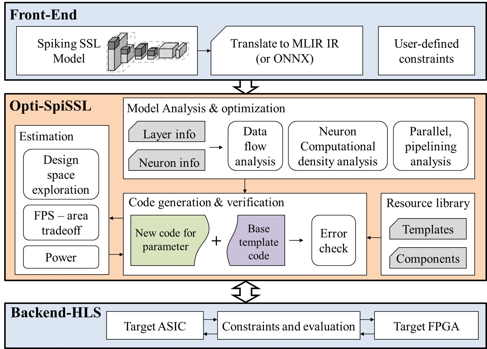

Research
• Research Interests
- Efficient AI deep learning optimization (quantization/pruning) and developing dedicated accelerators.
- Exploring deep learning-based sensor fusion and designing accelerators for efficient processing.
- Developing optimization automation and analytical software systems for AI accelerators.
• Current Research - 2025
- Hardware Accelerator for Spiking Self-Supervised Learning
- End-to-End framework for Spiking Self-Supervised Learning
• Research Topics
- Thermal-RGB Data Fusion for Safe Automotive Driving
- Runtime scheduler and optimization algorithms for SNN AI accelerator
- High-Speed Energy-Efficient Dynamic Pruning
- Micro-SIMD On-Chip Implementation
- Mitigating Overflow of Object Detection Tasks
Hardware Accelerator for Spiking Self-Supervised Learning
- Conventional self-supervised learning (SSL) models have demonstrated significant potential for efficiently learning from large-scale unstructured data. However, their high computational complexity and resource demands pose challenges for deployment on edge devices or hardware-constrained environments. In contrast, Spiking Neural Networks (SNNs), inspired by biological neurons, are characterized by low power consumption and asynchronous processing, making them highly efficient in resource-limited settings. Despite these advantages, no hardware accelerator currently exists that combines SSL models with SNNs, and research on optimization techniques integrating these two technologies remains insufficient. Therefore, we propose a high-performance hardware accelerator architecture for spiking SSL models along with corresponding hardware optimization methods. This architecture leverages the unique characteristics of both SNNs and SSL to maximize computational efficiency through data preprocessing, memory optimization, parallel processing, and pipelined structures.
Related Publications
- S³A-NPU: A High-Performance Hardware Accelerator for Spiking Self-Supervised Learning with Dynamic Adaptive Memory Optimization - IEEE Transactions on Very Large Scale Integration (VLSI) Systems
- A Power-Efficient Reconfigurable Hybrid CNN-SNN Accelerator for High Performance AI Applications - IEEE Symposium on Low-Power and High-Speed Chips and Systems (COOLChips), 2025
End-to-End framework for Spiking Self-Supervised Learning
- Self-supervised learning (SSL) has gained attention as an efficient method for learning from large-scale, unstructured data without the need for labels. However, the high computational complexity and resource demands of SSL make it challenging to execute on conventional CPUs and GPUs. In contrast, Spiking Neural Networks (SNNs) leverage asynchronous, event-driven processing, enabling low power consumption and high computational efficiency. These characteristics suggest the potential for combining SSL with SNNs to develop a high-performance, energy-efficient framework. However, research on hardware accelerators supporting SNN-based SSL remains limited. To address this, we propose a reconfigurable framework that automates the optimization and hardware code generation for SNN-based SSL models across various hardware environments, including FPGA and ASIC platforms. This is the first comprehensive framework enabling automated optimization and hardware implementation of SNN-based SSL models, offering high efficiency and flexibility. By bridging the gap between hardware and software layers, this framework paves the way for the practical application of SNN-based SSL across diverse hardware platforms.
Related Publications
Thermal-RGB Data Fusion for Safe Automotive Driving
- As the number of drivers increases, so do traffic fatalities. In Korea, pedestrian accidents made up 35.5% of traffic accidents over the past two years, with incidents involving children steadily rising. Current self-driving cars rely on lidar, which is limited to detecting distant obstacles, making it insufficient for accident prevention. We propose a solution using selective thermal data to identify pedestrians outside the visible range. RGB camera images are first used for object detection, and thermal data is selectively integrated to detect pedestrians in areas with higher obstacle density. This approach increased accuracy from 40.43% to 83.91%. On a PC, the algorithm runs at 2.7 FPS using 175.95 MB of memory, while on a Jetson Nano, it operates at 0.75 FPS with 140.08 MB, ensuring practical real-time performance.
Related Publications
Runtime scheduler and optimization algorithms for SNN AI accelerator
- As deep learning models become commercialized, the size of datasets and training requirements have grown exponentially, demanding significant computational resources and energy. To address these challenges, Spiking Neural Networks (SNNs), which mimic the behavior of biological neurons, have gained attention. However, research on software frameworks and hardware optimization for SNNs remains in its early stages. Additionally, existing SNN simulators are limited in scope, supporting only restricted environments, and lack efficient optimization methods for diverse hardware platforms. To overcome these limitations, we propose a runtime hardware code generation and optimization framework for deep SNNs. This framework is based on the TVM deep learning compiler, supports various SNN frameworks such as SNNTorch and SpikingJelly, and automatically generates optimized code using techniques like pruning, quantization, and scheduling tailored to the target hardware.
High-Speed Energy-Efficient Dynamic Pruning
- SNNs are a type of artificial neural network (ANN) that mimic the way brain neural networks process information. They use spikes as the unit of information, which propagate through a network of neurons and synapses. Spikes exchange only discrete information about whether a spike occurred in a specific neuron at a specific time, as opposed to tensors or floats in existing deep learning networks such as MLP, RNN, and CNN. The Convolutional Spiking Neural Network structure can operate with fewer electrical signals and is more energy efficient than deep neural networks (DNN) and convolutional neural networks (CNN) because it consumes less power. However, this comes at the cost of lower accuracy. To address this issue, we propose a structure that computes multiple convolutional layers in parallel by classifying them according to the patterns in the input dataset. This structure creates parallel layers based on the input class and prunes the processing element (PE) units to fit each input. The resulting structure is more accurate and can be trained on lightweight hardware.
Related Publications
Micro-SIMD On-Chip Implementation
- Recently, it has become possible to train neural networks on MPUs to achieve high performance and reduce power consumption. However, analyzing and processing the massive amounts of data used in deep learning is only being done on better performing multicore microprocessors. ARM-based cores have introduced the concept of single instruction, multiple data (SIMD), which plays an important role in optimizing the performance of deep learning algorithms. SIMD is a parallel processing technique classified according to Flynn's taxonomy. However, SIMD is only available on certain ARM cores and compilers, and it increases the size of the bus because it sends and receives 128-bit data. It also requires vectorization of the input data, which requires resources for preprocessing. Therefore, we introduce an implementation of micro-SIMD on the ARM Cortex M0 structure. Although the original ARM Cortex M0 does not have a SIMD, we generated and executed 16-bit instructions directly. Neural network training algorithms such as CNNs require a huge number of loops and MAC operations for each training layer. The parallelism of micro-SIMD can be very effective in computations like this, where the same operations are performed repeatedly.
Mitigating Overflow of Object Detection Tasks
- Currently, with the active development of autonomous driving, several technologies corresponding to it are developing. An essential technology to achieve a high level of autonomous driving is image processing technology. Since the camera input is an essential element, the key is how to implement it in a lightweight vehicle processor. Therefore, we study a lightweight image processing method using parallel processing so that it can be executed on a lightweight embedded board. There are two major algorithms required for lane recognition: Canny edge detection and Hough transformation. Hough transformation cannot be parallelized because all pixels must be read due to the nature of the algorithm, and Canny edge detection is parallelized. After completing the grayscale conversion, the gaussian smoothing, sobel operator, non-maximum suppression and hysteresis parts can be parallelized. Since this part requires filter operation, the corresponding pixel must be determined and parallelized. The pixels in each thread must be at least 5 wide because the Gaussian filter is 5x5. Through this parallelization, efficient results can be obtained in terms of memory and time, and accordingly, a lightweight lane recognition algorithm can be implemented.
Related Publications
- Efficient Object Detection based on Masking Semantic Segmentation Region for Lightweight Embedded Processors - Sensors 2022
- Efficient Object Recognition by Masking Semantic Pixel Difference Region of Vision Snapshot for Lightweight Embedded Systems - JKIICE 2022
- Virtualization of Self-Driving Algorithms by Interoperating Embedded Controllers on Game Engine for Digital Twining Autonomous Vehicle - Electronics, 2021